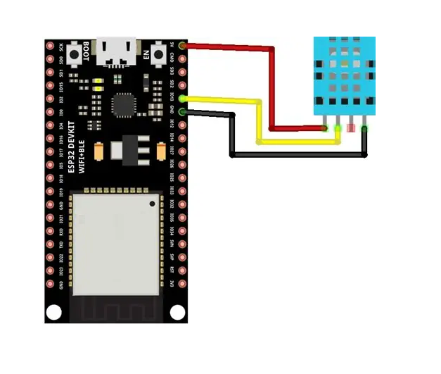

Ce projet consiste à créer une station météo connectée simple et économique en utilisant un microcontrôleur ESP32 et un capteur DHT11. Les données de température et d'humidité sont envoyées en temps réel vers la plateforme Arduino IoT Cloud, permettant une visualisation à distance depuis un smartphone, une tablette ou un ordinateur, où que vous soyez dans le monde.
La programmation est réalisée en C++ dans l'IDE Arduino, et Arduino IoT Cloud est configuré pour créer un tableau de bord personnalisé permettant de visualiser les données en temps réel.
Le projet répond au besoin de surveillance environnementale à distance et à faible coût :
Câblage du capteur DHT11 à l'ESP32 :
Note : J'utilise le module DHT11 (carte bleue à 3 broches), la résistance pull-up est déjà intégrée.
Schéma de connexion ESP32 - DHT11
Objectif : Réaliser le montage matériel du capteur DHT11 avec l'ESP32, établir la connexion Wi-Fi et vérifier la communication avec le réseau.
Montage et câblage : Broche VCC du DHT11 → 3.3V ESP32, Broche DATA → GPIO4, Broche GND → GND.
Démarche : Installation des bibliothèques DHT, écriture d'un code de test avec identifiants Wi-Fi.
Résultat : L'ESP32 se connecte au Wi-Fi et affiche l'adresse IP. Les valeurs du capteur s'affichent.
Objectif : Configurer l'ESP32 sur Arduino IoT Cloud et intégrer le code du capteur.
Démarche : Création d'un compte, ajout d'un device ESP32, création des variables température/humidité, intégration du code de lecture DHT11 dans le sketch généré.
Résultat : L'ESP32 est connecté au cloud et les données sont envoyées toutes les 10 minutes.
Objectif : Créer un tableau de bord et valider le fonctionnement complet.
Démarche : Création d'un dashboard avec widgets, liaison aux variables cloud, test en conditions réelles.
Résultat : Les données sont visibles en temps réel depuis l'application web, validant ainsi le projet.
Le DHT11 offre une stabilité correcte pour des applications non critiques (±1°C, ±2-3% HR). L'ESP32 maintient une connexion Wi-Fi stable et tente de se reconnecter automatiquement en cas de perte de signal.
La communication avec Arduino IoT Cloud est rapide (latence de quelques secondes). Le système est idéal pour une première expérience IoT réussie avec un budget très limité.
Le code C++ est simple à modifier. Le capteur DHT11 est facilement remplaçable (moins de 2$). L'ESP32 peut être reprogrammé à volonté via USB.
| Solution | Avantages | Inconvénients | Coût |
|---|---|---|---|
| ESP32 + DHT11 + Arduino IoT Cloud | Simple, rapide, économique | Précision limitée | 12-15$ |
| ESP32 + DHT22 + Arduino IoT Cloud | Meilleure précision | Coût légèrement supérieur | 15-20$ |
| Station météo commerciale | Design soigné, application mature | Coût élevé, non personnalisable | 100-200$ |
Le projet Station Météo Connectée avec DHT11, ESP32 et Arduino IoT Cloud est une excellente introduction à l'IoT pour les débutants et les makers. Il offre un rapport qualité-prix exceptionnel et permet de concrétiser rapidement un projet fonctionnel et utile.
Idéal pour : les étudiants, les makers débutants, l'enseignement, la surveillance basique à moindre coût.
À éviter si : vous avez besoin de mesures scientifiques précises, pas de Wi-Fi stable, ou une aversion pour les solutions cloud.
Une fois maîtrisé, le projet peut évoluer vers un DHT22 plus précis, l'ajout d'autres capteurs (luminosité, pression).